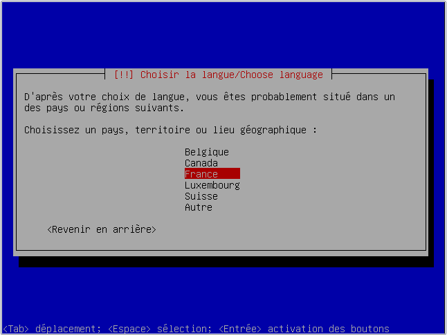

L'Alternate CD est comme son nom l'indique (d'autant plus pour les anglophones) un CD Alernatif. Alternatif à quoi ? Au Live-CD : le CD permettant d'installer Ubuntu (ou toute autre distribution de Linux) sur un PC.
En effet, l'Alternate CD est plus simple et plus léger que le Live CD qui lui demande pas mal de ressources pour l'ordinateur. Il permet entre autres d'installer une distribution (ici Xubuntu) sur des ordinateurs peu performants. Ne jetez donc pas vos vieux PC qui tournent encore sous Windows 98 ou même Windows 95, on peut les "recycler" !
Pré-requis pour ce tuto : Il vaut mieux savoir un minimum ce qu'est Linux avant de lire ce tuto, je vous conseille de lire au moins les deux premiers chapitres du tuto de M@teo21 sur Linux. ;)
Xubuntu est une distribution de Linux gratuite, légère et fonctionnelle.
Cette distribution est intéressante pour les basses configurations peu performantes, notamment pour les vieux PC dont on ne sait pas quoi faire. Néanmoins, Xubuntu a la même base qu'Ubuntu. Il n'y a que l'interface graphique (Xfce) qui change, et elle est donc beaucoup moins lourde et gourmande que Gnome ou KDE par exemple. Vous y gagnez donc en ressources et en rapidité. N'espérez pas avoir les effets graphiques, ce n'est pas dans l'esprit de cette distribution. (Même si ça reste possible pour les PC ayant une bonne configuration)
Xubuntu est d'ailleurs aussi apprécié de ceux qui aiment les performances sans fioritures. Autrement dit si vous aimez avoir un système optimisé, l'installation d'une distribution légère telle que Xubuntu est un bon début.
Et pourquoi l'Alternate CD ?
L'Alternate CD ne s'adresse uniquement au basses configurations, car le Live-CD mine de rien ça demande pas mal de ressources ! Ce qui change c'est l'interface graphique qui est, pour l'installation seulement, complètement dénudée (elle ressemble à l'interface du boot), et il ne vous permet pas de tester Xubuntu. Vous devrez donc me faire confiance. :-° (Vous inquiétez pas, dans le pire des cas il existe toujours les forums, mais tout devrait bien se passer. ;) ) En attendant, voici un petit screen de ce que vous obtiendrez à la fin de l'installation :
Pour que vous visualisiez mieux ce que je vous raconte, je vous propose le tableau comparatif suivant, en partie tiré d'Ubuntu-fr.org :
Variante
Cadence du processeur
Mémoire vive (RAM)
Espace Disque
Autres
Windows Vista
1 Ghz
1000 Mo (1 Go)
10 Go
Carte graphique PCIe ou AGP disposant de 128 Mo de mémoire vive embarquée au minimum avec pilote WDDM. lecteur/graveur DVD
Windows XP
300 Mhz
128 Mo
1,5 Go
Lecteur CD-ROM. Carte graphique et un écran haute résolution Super VGA (800 × 600) ou supérieure.
(K)Ubuntu avec effets 3D
1,2 Ghz
384 Mo
8 Go
Carte graphique capable d'accélération 3D, carte son, carte réseau, lecteur de CD-ROM
(K)Ubuntu sans effets 3D
700 Mhz
384 Mo
8 Go
Carte graphique capable d'une résolution d'au moins 1024x768, carte de son, carte réseau, lecteur de CD-ROM
Xubuntu
300 Mhz
256 Mo
8 Go
Carte graphique capable d'une résolution d'au moins 800x600, carte de son, carte réseau, lecteur de CD-ROM
Variante
Cadence du processeur
Mémoire vive (RAM)
Espace Disque
Autres
Windows Vista
800 Mhz
512 Mo
7 Go
Carte graphique PCIe ou AGP disposant de 128 Mo de mémoire vive embarquée au minimum avec pilote WDDM
Windows XP
233 Mhz
64 Mo
1,5 Go
Lecteur CD-ROM. Carte graphique et un écran haute résolution Super VGA (800 × 600) ou supérieure.
(K)Ubuntu sans effets 3D
300 Mhz
64 Mo
4 Go
Carte vidéo VGA supportant une résolution d'au moins 640x480, lecteur de CD-ROM, carte réseau
Xubuntu
166 Mhz
64 Mo
1,5 Go
Carte graphique VGA, lecteur de CD-ROM
Et oui, ça ne demande pas beaucoup de ressources ! À titre de comparaison, un iPhone possède un processeur de 600 MhZ, 128 Mo de mémoire vive, 4 à 8 Go d'espace disque... En théorie ça tient !
Tout d'abord, il faut télécharger l'image ISO de Xubuntu ici. Sur la page de téléchargement, choisissez "Xubuntu - Un bureau Xfce fonctionnel et léger", puis "PC standard" si votre PC est un 32 bits, ou "PC à processeur 64 bits" si votre PC est un 64 bits. Vous pouvez vérifier cela sur internet ou dans votre notice fourni avec le matériel. Cochez la case "Utiliser l'Alternate CD", et enfin pour terminer, choisissez votre pays et cochez la case "Utiliser le BitTorrent" si vous préférez télécharger par BitTorrent. Bon téléchargement. ;)
Après le téléchargement, il faut graver le fichier sur CD. Mais attention, ce fichier est particulier, c'est une image ISO. Donc il faudra graver le CD à partir de l'image ISO, et non comme CD de données habituel comme vous avez peut-être l'habitude. Je me permets de citer M@teo21 qui explique bien cela :
Citation : M@teo21
Graver le CD
Il vous faut maintenant graver le gros fichier .iso que vous venez de télécharger.
Sous Windows 7
Si vous avez Windows 7, un outil de gravure d'images disque .iso est déjà inclus. Il vous suffit de double-cliquer sur le fichier .iso, ce qui aura pour effet d'ouvrir cette fenêtre :
Insérez un CD vierge dans votre graveur et cliquez tout simplement sur "Graver".
Sous d'anciennes versions de Windows
Il vous faut un logiciel de gravure pour graver le fichier ISO car les versions antérieures à Windows 7 ne savent pas graver des images disque.
Si vous avez déjà un programme comme Nero ou Easy CD Creator et que vous savez comment graver un ISO, c'est très bien. Sinon, je vais vous montrer comment faire à l'aide du logiciel de gravure gratuit CDBurnerXPPro.
Tout d'abord, commencez par télécharger CDBurnerXPPro. Le logiciel est en français :)
Commencez par insérer un CD-R (CD vierge) dans votre graveur. Lancez ensuite le logiciel CDBurnerXPPro et, lors du démarrage, cliquez sur "Créer un CD/DVD de données" :
La fenêtre principale s'ouvre. Allez dans le menu Fichier / Graver le disque à partir du fichier ISO. Une nouvelle fenêtre s'ouvre alors :
Commencez par indiquer en haut où se trouve le fichier ISO que vous venez de télécharger. Vous pouvez graver à vitesse maximale, mais cela peut provoquer des erreurs parfois, comme une coupure pendant l'installation de Linux. Si vous êtes du genre prudent, je vous recommande de réduire la vitesse de gravure (vous pouvez mettre 2X ou même 1X).
Cliquez ensuite sur le bouton "Graver le disque", patientez quelques minutes, c'est prêt ! :D
Bah voilà, c'était pas bien compliqué :) Vous avez maintenant un CD d'Ubuntu flambant neuf, gratuit, légal, qui n'attend que d'être essayé ;)
Une bonne chose de fait, vous avez maintenant normalement votre Alternate CD de Xubuntu prêt à être installé !
Maintenant, il y a deux cas de figure, soit vous êtes nostalgique et vous voulez garder votre ancien OS, soit vous en avez vraiment marre et souhaitez complètement passer à Xubuntu.
Dans le deuxième cas, pas de problème, cependant si vous souhaitez garder votre premier OS, il faut prendre quelques précautions (on est jamais à l'abri d'une boulette :-° ) :
Faire une sauvegarde de vos données importantes sur CD ou clé USB par exemple
Avoir un CD de restauration de système dans le cas où par erreur vous installeriez Xubuntu par-dessus votre Windows ou Mac
Faire une défragmentation, cela évite de perdre des données, pour en savoir plus lisez cette partie du tuto seulement, c'est suffisant.
Et après il faudra partitionner, je vous conseille donc également de lire ces deux parties du tutoriel officiel sur Linux afin de comprendre la notion de partition ;) : qu'est-ce que le partitionnement ? Prêts ? Partitionnez !
Ceci dit, en général les ordinateurs sur lesquels on ne peut installer que par Alternate CD sont obsolètes, ainsi que leurs OS. (Windows 95, 98, Millenium, etc ...) Je pense donc que vous risquez de ne pas perdre grand-chose. Mais je ne vous impose rien, c'est vous qui voyez.
Ensuite, et cela vaut pour tout le monde, il faut configurer le boot. Késako ? Et bien je vais me permettre (oui encore une fois) de citer M@teo21 qui l'explique bien :
Citation : M@teo21
Modifier l'ordre de boot
Si vous devez modifier l'ordre de boot pour que votre ordinateur lise le CD, redémarrez. Pendant l'écran de boot (la toute première chose que vous voyez à l'écran), pressez la touche indiquée pour accéder au Setup, aussi appelé BIOS (c'est l'écran de configuration de votre carte mère). Généralement, la touche est F2 ou Suppr, mais cela peut varier selon la carte mère que vous avez.
Vous devriez alors voir le superbe menu du BIOS (sigh !). D'un ordinateur à l'autre, cet écran peut être légèrement différent.
On a connu plus accueillant :D
Repérez le menu "Boot". Il faudra généralement vous déplacer à l'aide des flèches du clavier. Le menu Boot peut être différent sur votre ordinateur, voici ce que ça donne sur le mien :
Ici, on peut définir l'ordre dans lequel l'ordinateur essaie de démarrer les éléments. A vous de changer cet ordre pour faire en sorte que votre ordinateur essaie de démarrer sur le CD avant de démarrer sur le disque dur.
Lisez les instructions sur le côté (certes, en anglais), pour savoir comment faire sur votre ordinateur. Si vraiment vous êtes bloqué, n'hésitez pas à aller demander de l'aide sur les forums du site.
Si vous devez modifier l'ordre de boot pour que votre ordinateur lise le CD, redémarrez. Pendant l'écran de boot (la toute première chose que vous voyez à l'écran), pressez la touche indiquée pour accéder au Setup, aussi appelé BIOS (c'est l'écran de configuration de votre carte mère). Généralement, la touche est F2 ou Suppr, mais cela peut varier selon la carte mère que vous avez.
Vous devriez alors voir le superbe menu du BIOS (sigh !). D'un ordinateur à l'autre, cet écran peut être légèrement différent.
On a connu plus accueillant :D
Repérez le menu "Boot". Il faudra généralement vous déplacer à l'aide des flèches du clavier. Le menu Boot peut être différent sur votre ordinateur, voici ce que ça donne sur le mien :
Ici, on peut définir l'ordre dans lequel l'ordinateur essaie de démarrer les éléments. A vous de changer cet ordre pour faire en sorte que votre ordinateur essaie de démarrer sur le CD avant de démarrer sur le disque dur.
Lisez les instructions sur le côté (certes, en anglais), pour savoir comment faire sur votre ordinateur. Si vraiment vous êtes bloqué, n'hésitez pas à aller demander de l'aide sur les forums du site.
Une fois que tout cela est fait, on peut passer à l'étape suivante ! :) (et c'est là que je commence réellement mon tuto ^^ ).
Vous pouvez y aller ! Vous prenez votre CD, et vous le rentrez dans votre lecteur CD.
Etape 1 : La configuration
On vous demande d'abord votre langue, et normalement si tout va bien, vous devriez voir cet écran :
C'est le même écran que pour le Live CD Ubuntu, peu de choses changent pour l'instant. À noter qu'ici on n'a pas de souris, on se déplace exclusivement avec le clavier, c'est normal. Voyons un peu tout ça :
Installer Xubuntu : C'est là qu'on démarre la procédure d'installation que je vais vous expliquer dans ce tuto ;
Vérifier le CD : Ça permet de vérifier le CD (comme son nom l'indique :-° ), c'est plus utile qu'on ne le croit, je vous conseille même de le faire. Avouez que ce serait ballot d'installer un Xubuntu déficient à cause d'une mauvaise gravure, ou téléchargement ;
Réparer un système endommagé : C'est encore une fois assez explicite, si jamais un jour votre Xubuntu vous pose problème pour une raison ou une autre et que vous ne savez pas quoi faire, et bien maintenant vous savez. Vous reprenez votre Alternate CD et tapez Entrer sur cette option ;
Tester la mémoire : cela lance le programme Memtest, qui n'a rien à voir avec Linux. C'est juste un utilitaire pour vérifier le bon fonctionnement de votre mémoire vive, si jamais vous soupçonnez un jour qu'elle a un problème. Attention cela dure au moins plusieurs heures ! ;
Démarrer à partir du premier disque dur : cela permet tout simplement de démarrer l'ordinateur sur votre OS habituel.
Vous remarquerez que vous avez accès à d'autres options via les touches F1, F2, F3, etc. :
F1 Aide : En appuyant sur F1 vous aurez accès à un bref descriptif de ces différentes options ;
F2 Langues : Vous pouvez régler la langue ici si c'est en anglais. Il se peut d'ailleurs qu'on vous demande de choisir la langue au tout début ;
F3 Clavier : Si vous avez un clavier particulier (belge, suisse, canadien, autre ...) vous pouvez l'indiquer maintenant, mais ce n'est pas primordial et vous pourrez le faire par la suite ;
F4 Modes : Si vous voulez choisir un mode de démarrage différent ;
F5 Accessibilité : Vous pouvez y activer certaines options d'accessibilité si vous avez un handicap visuel ou autre tel que la Loupe, le Lecteur d'écran ou le Clavier à l'écran
F6 Autres options : Ceci est prévu pour des utilisations spécifiques, on en aura pas besoin ici.
Comme vous pouvez le voir, tout ceci n'est pas indispensable, mais au moins vous savez où vous mettez les pieds maintenant. Une fois que vous avez fait tous vos petits réglages (ou pas, c'est pas indispensable), allez sur Installer Xubuntu.
On vous demande alors, après quelques secondes, votre pays, on les a même triés en fonction de la langue que vous avez choisie. ;)

Après avoir choisi, le programme d'installation va faire quelques vérifications, ça ne dure pas longtemps laissez tout faire jusqu'à cet écran :
Comme demandé, rentrez le nom que vous voulez donner à votre machine (cela sert quand votre ordi est en réseau). Habituellement, pseudo-desktop ou pseudo-laptop si c'est un portable, mais vous pouvez mettre ce que vous voulez.
Une fois cela fait, le CD va faire encore quelques détections matérielles, puis charger le programme qui va permettre le partitionnement. Le moment central de l'installation !
Si vous ne souhaitez pas garder votre ancien OS alors sélectionnez "Assisté - Utiliser un disque entier". Vous n'avez plus après qu'à donner votre confirmation pour le disque dur utilisé, et enfin pour l'installation où l'on vous récapitulera tout. Après ça c'est parti pour une première série de paquets à installer, et vous pouvez sauter la prochaine étape concernant le partitionnement, ça ne vous sert à rien. ;)
Pour les autres, l'heure du partitionnement est arrivée ! :diable:
Etape 2 : Le partitionnement
On constate qu'on nous donne le choix pour partitionner ! :o
Guided (Guidé) : Normalement, avec cette méthode, votre ancien OS sera automatiquement redimensionné pour faire de la place à notre Xubuntu. Cependant, cette méthode n'est pas toujours proposée pour diverses raisons. Ne vous affolez pas si vous ne la voyez pas. Assisté - utiliser un disque entier : on l'a déjà vu, et le nom est assez explicite, pas la peine de s'étaler dessus. Assité - utiliser un disque entier avec LVM/LVM chiffré : Cette méthode avec LVM répond à des besoins spécifiques qu'on ne développera pas ici. Elle est proposée une seconde fois avec sa variante chiffrée. Manuel : C'est ce que nous allons voir tout de suite, et où, comme vous l'imaginez, on s'occupera de paramétrer selon nos besoins.
Le partitionnement manuel
Une fois rentré dans le mode manuel, on vous propose encore une série de choix :
Partitionnement assisté : En fait, il s'agit d'un simple retour en arrière pour les frileux, qui vous ramènera au choix des méthodes de partitionnement que l'on a vu précédemment. Aide pour le partitionnement : vous trouverez plus d'informations sur le partitionnement.
Il y a ensuite un saut de ligne, suivi d'une liste des disques durs présents dans l'ordinateur, et d'une liste des systèmes de fichier présents sur chaque disque.
Ici, je n'ai qu'un disque dur (SCSI1), dans lequel il n'y a qu'une seule partition comme en témoigne le seul système de fichier (fat32). Ce qui est logique vu que pour l'instant il n'y a que votre Windows d'installé. Ceci dit, il se peut qu'il y ait un second système de fichier d'installé, autrement dit, une seconde partition, comme la partition de restauration du disque par exemple.
Si vous choisissez le disque, cela revient à utiliser un disque entier, or ce n'est pas ce que nous voulons, sinon il aurait été plus simple de choisir « utiliser un disque entier » précédemment. Il faut donc sélectionner la partition en dessous, et taper Entrer. Ce qui nous amène à cette étape :
Je ne vais pas m'éterniser à expliquer tous les choix possibles. Dans notre cas il nous faut d'abord redimensionner la partition sélectionnée pour faire de la place aux autres partitions que l'on souhaite créer. On sélectionne ainsi directement « Redimensionner la partition (actuellement X GB) ».
On vous affiche un message d'avertissement :
Confirmez alors votre choix. Vous pouvez maintenant indiquer la taille que vous souhaitez pour cette partition.
Vous pouvez indiquer la taille de la partition souhaitée directement, ou en pourcentage du disque dur.
Taper Entrer pour confirmer, et le redimensionnement est lancé. Une fois terminé, on revient à notre menu de partitionnement manuel, avec une nouveauté :
Et oui, on possède un nouvel espace libre ! :D On va ainsi pouvoir y mettre notre partition pour Xubuntu, et celle pour nos Documents. Sélectionner donc ce nouvel espace.
Vous avez maintenant le choix entre créer une nouvelle partition, ou directement partitionner sur celle-ci, c'est-à-dire directement installer Xubuntu. (Si vous ne souhaitez pas avoir de partition allouée aux documents, mais que vous vouliez laisser une taille suffisante pour Windows par exemple)
Si l'on créé une nouvelle partition, on nous demande encore une fois quelle taille on souhaite. On vous demande ensuite de choisir entre une partition Primaire ou Logique. Et enfin si vous souhaitez placer cette partition à la fin ou au début de l'espace disponible. Ce qui n'a finalement peu d'importance.
On vous récapitule ensuite la situation où vous pouvez encore effectuer des modifications :
Je vous conseille de laisser par défaut, et de sélectionner « Fin du paramétrage de cette partition »
Renouvelez l'opération pour créer un espace réservé à vos documents.
Et enfin, laisser 1 GB au maximum, pour le swap. Il faudrait alors préciser « Utiliser comme : espace d'échange « swap » » dans la configuration de la partition, au lieu de « Système de fichier journalisé ext3 »
Et enfin « Terminer le partitionnement et appliquer les changements »
On vous affiche une synthèse des changements effectués jusqu'à présent :
Vérifiez bien vos paramétrages, il est encore temps de revenir en arrière, cependant après ce ne sera plus possible.
Une fois que vous êtes sûr de vous, sélectionner "Oui". Le partitionnement commence.
Ensuite, vous pouvez reprendre la suite du tuto. :)
Etape 3 : L'installation "réelle"
Choix des noms d'utilisateurs et du mot de passe
Nous revoilà tous réunis, et après avoir installé une première série de paquets (eh oui ce n'est pas encore fini :p ), on vous demande votre nom d'utilisateur et votre mot de passe comme sous les images suivantes :
Enfin on vous pose une question farfelue concernant un serveur mandataire. Laissez tomber, ça nous concerne pas, c'est pour une utilisation spécifique. Laissez donc le champ libre et tapez Entrer.
Et la seconde et dernière série de paquets va s'installer. C'est d'ailleurs la principale. Vous pouvez prendre un café, sortir un peu, etc. Vous en avez pour au moins une demi-heure en fonction de la capacité de votre PC.
Fin de l'installation
Rassurez-vous, le plus gros est fait, mais on vous enquiquine encore pour deux broutilles : on vous demande si vous voulez synchroniser votre horloge avec le BIOS et enfin vous prévient que c'est fini.
Je ne fais pas de screen, vous devriez vous débrouiller facilement pour ça. ;)
Bravo ! Vous êtes passé sous Linux et le plus dur a été fait ! :)
Maintenant vous pouvez découvrir votre nouvel OS.
Néanmoins, il reste quelques petites mises à jour et installations afin de pouvoir partir sur de bonnes bases. Après c'est fini, c'est promis. ;)
Mises à jour et support linguistique
Alors premièrement nous allons mettre à jour notre OS, car entre le moment où celui-ci a officiellement été lancé et le moment où vous l'avez installé, certains des logiciels ou même des programmes du système ont pu être mis à jour. Les mises à jour permettent de corriger des bugs ou des failles (on en trouve tous le temps chez tous les programmes), améliorer les programmes, apporter des nouveautés, etc..
Pour cela le plus simple et le plus efficace est de passer par la console. Vous ne savez peut-être pas encore ce que c'est, et c'est vrai qu'au début ça fait peur, mais ne vous inquiétez pas, M@teo21 vous expliquera tout ceci dans la suite de son tuto. ;)
Allez dans Applications > Accessoires > Terminal, et tapez dans la console qui s'ouvre la fameuse commande :
sudo apt-get update && sudo apt-get upgrade
Cela met à jour la liste des dépôts, puis les paquets (logiciels) installés. On vous demandera votre mot de passe, c'est normal. Une fois cela fait, il y a de fortes chances qu'on vous demande de redémarrer.
Ensuite, nous allons améliorer le support linguistique.
Quoi ? Pourquoi faire ?
Vous avez peut-être pas remarqué, mais Xubuntu n'est pas complètement traduit.
Pour corriger cela nous allons donc améliorer le support linguistique. Allez dans Applications > System > Language support. Dans la liste, cochez "French" et cliquez sur OK. Laissez l'installation se faire, puis fermez les fenêtres.
Délogez-vous (Menu "Applications" > "Quit" > bouton "Logout"). Dans l'écran de login, cliquez sur "Language" et sélectionnez "French (UTF-8)" et cliquez sur "Change language". Ensuite, entrez login et mot de passe. Une fenêtre va apparaître: Cliquez sur "Make default".
Maintenant le français est la langue par défaut, avouez que c'est mieux pour comprendre. :-°
Réduire la taille des polices et des menus
Les polices par défaut de Xubuntu (et Ubuntu) sont un peu grosses, surtout sur les vieux PC qui ne sont qu'en 800x600, pour la raison que dans la majorité des cas la résolution par défaut est réglée à 96dpi. Voici comment corriger ça : prenez un éditeur de texte et créez un fichier nommé .Xresources dans votre répertoire home. Pressez [Ctrl] + [H] dans le navigateur de fichiers pour voir les fichiers cachés) Ouvrez ce fichier et mettez dedans la ligne suivante:
Xft.dpi: 90
Délogez et relogez-vous pour en voir les effets. Vous pouvez également diminuer la valeur pour des polices encore plus petites.
Il arrive que certains logiciels aient leurs propres réglages de DPI. Vous devrez les configurer.
Pour les menus, allez dans le menu "Applications" > "Paramètres" > "Gestion des paramètres de Xfce". Cliquez sur "Panneau" (icône avec une souris noire). Pour chacun des panneaux (Panneau 1 et Panneau 2), sélectionnez la taille en pixels et le tour est joué (par exemple 26 au lieu de 32).
Installer Flash, Java, codecs vidéos et audios, ...
Et vous la dernière et ultime étape : installer Flash, Java et les codecs qui ne sont pas installés par défaut pour des questions juridiques. (Mais vous avez tout à fait le droit de l'installer vous même ;) )
Pour cela il faut retourner dans la console et rentrer cette commande :
Avec ceci, vous pourrez : lire pratiquement tous les formats audio et vidéo (DivX, MPEG4, MP3...), lire les DVD, voir les animations Flash dans les pages web, les applets et programmes Java fonctionneront, et vous aurez également les polices Windows (Times New Roman, Arial, Courrier New...).
Et voilà c'est vraiment fini et pour de bon. ;)
Félicitations ! Vous venez de passer dans le monde de Linux ! :)
J'espère qu'il vous plaira, en attendant, vous pouvez lire la suite du tuto Linux qui vous apprendra à maîtriser cet OS.